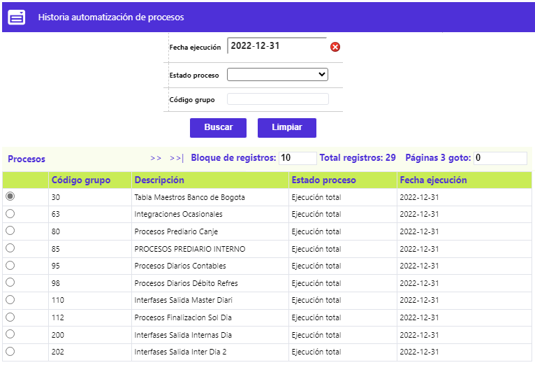
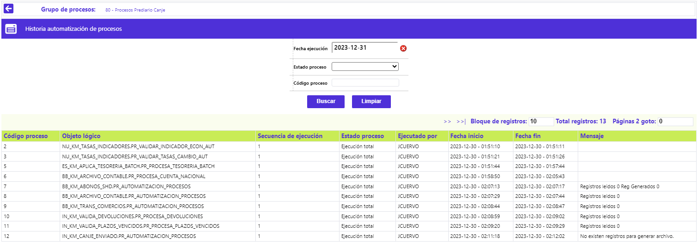
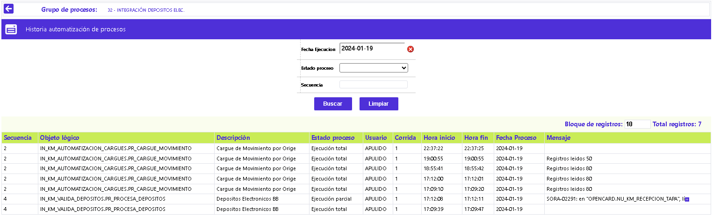

Historia automatización de procesos
Mediante este formulario, utilizando los criterios del filtro, la entidad puede consultar la información o resultado de la ejecución, en una fecha anterior en particular, de los diferentes Grupos y/o Procesos.

Criterios del Filtro
|
Fecha ejecución |
Campo que ofrece la funcionalidad de un calendario, mediante el cual se debe seleccionar la fecha a la que corresponden los Grupos / Procesos que se desea consultar. |
|
Estado proceso |
En este campo con lista de valores tipo combo, de la cual es posible seleccionar entre: No ejecutado, Proceso en ejecución, Ejecución parcial, Proceso pendiente, Ejecución total, Proceso en cola y Esperando Confirmación, el estado de los Grupos / Procesos a consultar. |
|
Código grupo |
Campo en el que debe digitarse el dato del Código del grupo en particular, al cual pertenecen los procesos que se desea consultar. |
Una vez seleccionada la combinatoria de criterios de interés, al activar el botón Buscar, el sistema retorna la información de los registros que coincidan.

Descripcion Campos
|
Código grupo |
Campo en el que se ilustra el dato que identifica a cada uno de los grupos, que fueron ejecutados durante la fecha que se está consultando. |
|
Usuario |
Campo que muestra el nombre del usuario de la base de datos, que el sistema registra como responsable de ordenar la ejecución del grupo de procesos en la fecha consultada. |
|
Corrida |
En este campo se muestra el número acumulado o cantidad de veces que se ha ejecutado el grupo de procesos en la misma fecha que se está consultando. |
| Descripción |
Campo que ilustra el nombre del grupo de procesos ejecutado en la fecha consultada. |
|
Estado proceso |
Campo que ilustra si el grupo de procesos terminó o no de forma exitosa para la fecha consultada. |
|
Hora |
Campo que ilustra en formato militar HH:MM:SS el momento en que finalizó la ejecución del grupo de procesos. |
El formulario cuenta con el enlace Procesos el que, al activarse, despliega un nuevo formulario, en el cual se muestran los procesos pertenecientes al Grupo desde el que fue invocado, mostrando los datos correspondientes al resultado obtenido en el momento en que fue lanzado cada proceso:

|
Secuencia |
Campo que corresponde al identificador asignado por el sistema, a cada objeto lógico o proceso, al momento de crear el registro en la opción Definición grupos de procesos - Procesos |
|
Objeto lógico |
En este campo se muestra el nombre del procedimiento o programa ejecutado en la fecha consultada. |
|
Descripcion |
Campo que muestra el nombre del procedimiento o programa ejecutado en la fecha consultada. |
| Estado proceso |
Campo que ilustra si el proceso terminó o no de forma exitosa para la fecha consultada. |
|
Usuario |
Campo que muestra el nombre del usuario de la base de datos, que el sistema registra como responsable de ordenar la ejecución del proceso en la fecha consultada. |
|
Corrida |
Campo que indica el número de veces que fue ejecutado el proceso en la fecha consultada. |
|
Hora inicio |
Campo que ilustra en formato militar HH:MM:SS el momento en que inició la ejecución del proceso. En caso de varias ejecuciones para la misma fecha, muestra la información correspondiente a la última vez que se dio inicio al proceso. |
|
Hora fin |
Campo que ilustra en formato militar HH:MM:SS el momento en que finalizó la ejecución del proceso. En caso de varias ejecuciones para la misma fecha, muestra la información correspondiente a la finalización de la última vez que se corrió el proceso. |
|
Fecha proceso |
En este campo se muestra la fecha del sistema en la cual se ordenó o lanzó el proceso. |
|
Mensaje |
Campo que muestra el mensaje enviado por el sistema al momento de finalizar el proceso. Por lo general cuando el proceso no culmina exitosamente muestra el error que indica la causa de no terminación del proceso. |